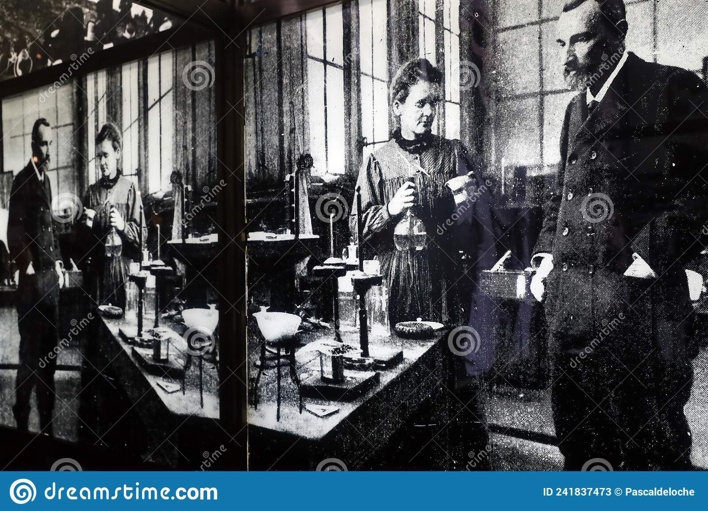

<!DOCTYPE html>
<html>
    <head>
        <link rel="stylesheet" href="styles.css">
    </head>
</html>

<body>
    <main id="main">
        <h1 id="title">MARIE CURIE</h1>
        <p>The First Woman to win a Nobel Prize and The First Person — man 
            or woman — to win the award twice</p>
        <figure id="image-div">
            
            <figcaption id="img-caption">
                "Marie Curie was conducting radioactive experiment in lab".
            </figcaption>
        </figure> 
    
    <section id="tribute-info">
        <h3 id="headline">Here are timeline of Marie Curie's life:</h3>
        <ul>
            <li>
                <!-- ::marker -->
                <strong>1867</strong>
                - She was born in Warsaw, Poland on Nov 7.
            </li>
        </ul>
        <ul>
            <li>
                <strong>1891</strong>
                - Marie moved to France to get a higher education on Jan 1. It was illegal for women to 
                get a higher education in Poland. 
            </li>
        </ul>
        <ul>
            <li>
                <strong>1895</strong>
                - Marie married Pierre Curie, an other brilliant mind, and the two would later do much 
                research on radiation on Jul 26.
            </li>
        </ul>
        <ul>
            <li>
                <strong>1897</strong>
                - Marie Curie had her first daughter on this day. 
            </li>
        </ul>
        <ul>
            <li>
                <strong>1898</strong>
                - It was on this day that Marie discovered Polonium. It was a radioactive element that was
                named after her country of birth, Poland on Dec 19.
                - It was on this day that Marie discovered Radium, a radioactive element. It was named 
                after the phenomena, radioactivity on Dec 21.
            </li>
        </ul>
        <ul>
            <li>
                <strong>1903</strong>
                - This was Marie's First Nobel Prize. This was awarded to Henri Becquerel, Pierre Curie, 
                and Marie. This was the Physics Nobel prize on Dec 10.
            </li>
        </ul>
        <ul>
            <li>
                <strong>1904</strong>
                - Marie Curie gave birth to her second daughter, who would later go on to be an author. 
                Her daughter's name was Ève Denise Curie Labouisse. Dec 6.
            </li>
        </ul>
        <ul>
            <li>
                <strong>1911</strong>
                - Marie won her second Nobel prize, this time in chemistry, for her discovery of radium 
                and polonium. This made her the first, and so far the only person to have won the Nobel 
                Prize in two different categories. 
            </li>
        </ul>
        <ul>
            <li>
                <strong>1921</strong>
                - Marie Curie goes to the White House to receive one gram of radium from president Harding. 
            </li>
        </ul>
        <ul>
            <li>
                <strong>1934</strong>
                - Marie died July 4, 1934, in Sancellemoz, from aplastic anemia, a bone marrow disease. 
                The disease is inflicted by long term exposure to radiation.
            </li>
        </ul>
        <blockquote cite="https://www.mariecurie.org.uk/who/our-history/marie-curie-the-scientist">
        <p>
            "Marie Curie is remembered for her discovery of radium and polonium, and her huge contribution
             to finding treatments for cancer. This work continues to inspire our charity's mission to 
             help people and their families living with a terminal illness make the most of the time 
             they have together by delivering expert care, emotional support and research."
        </p>
        <cite>-- Marie Curie Foundation</cite>
        </blockquote>
        
        <h3>
            "If you have time, you should read more about this incredible human being on her"
            <a id="tribute-link" href="https://www.mariecurie.org.uk/who/our-history/marie-curie-the-scientist" target="_blank">Marie Curie Org</a>.
        </h3>
    </section>
    </main>
</body>